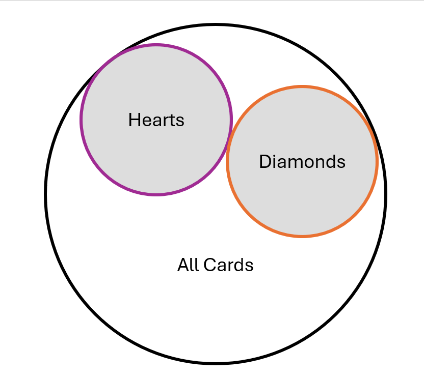
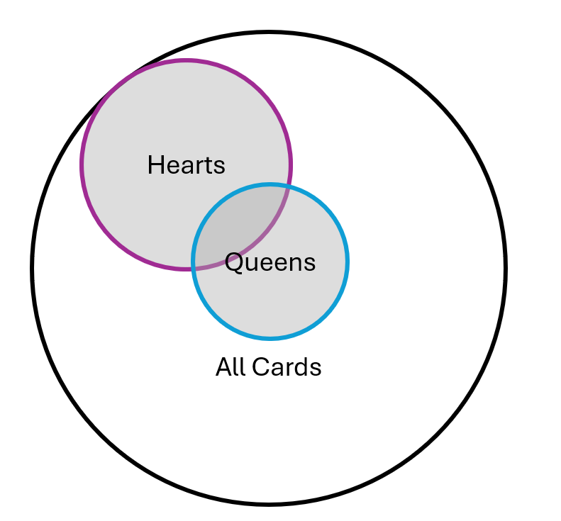

4 Understanding Probability
4.1 Learning Objectives
Understand what a probability is, and how the additive law, the multiplicative law, and conditional probability allow us to understand the likelihood of events occurring given different conditions.
Understand what a “standard score” is, and know the characteristics of some common standard scores (e.g., z-scores, t-scores)
In order to understand the connection between data and inferences we can make about it, we need to spend a little time talking about probability. Some statistics books go into a lot of depth on this topic, but I actually think there are just a handful of principles that you need to understand in order to grasp how statistics work:
Additive Law
Multiplicative Law
Conditional Probability
If you can get these three concepts down, you’ll have most of what you’ll need for a basic level of statistics. Probability is surprisingly tricky for humans! Our brains are not really built to understand how probability works, and we make a lot of mistakes when we think about the world around us and make quick judgments about what is likely versus unlikely (read any article by Daniel Kahneman and Amos Tversky – these two made a whole career out of finding weird ways we misunderstand probability).
So, in this chapter, we’re going to walk through these laws, then at the end, we’ll connect it back to why this matters for social sciences.
4.2 Basic Probability
Just in case you are a little rusty on the basics of probability, let’s walk through an example. Let’s say that I have a standard deck of cards, which has four suits (hearts, diamonds, clubs and spades) and each suit has 13 cards (2-10, Jack, Queen, King, Ace… let’s assume we’ve put the two Joker cards aside for this example). When we calculate a probability, all we’re doing is taking the likelihood of something happening over all possible events.
Imagine that I want to know the probability that I will draw a Heart out of my deck of cards. We can determine this probability by considering how many Heart cards there are in the deck (13) and how many total cards there are in the deck (52). So, we can indicate the probability of a Heart this way:
\(p(Heart)=\frac{Heart Cards}{All Cards}=\frac{13}{52} =.25\)
This tells us a have a 25% chance of drawing a Heart card from my deck.
4.3 Additive Law
Additive law is defined as “Given a set of mutually exclusive events, the probability of the occurrence of one event or another is equal to the sum of their separate probabilities.” When we say “mutually exclusive,” this means that we have a situation where either one event or another can occur, but they can’t both occur. In the case of my cards, the suit on the card I draw is mutually exclusive – my card can’t be both a Heart and a Diamond, it can only be one of those things. But I might be interested in the probability of drawing a card that is a Heart or a Diamond. Additive law provides the answer for us – we determine the probability of each event happening, and then we add them up:
\(p(Heart \:or\: Diamond)=p(Heart)+p(Diamond) = .25+.25=.50\)
This tells me I have a 50% chance of randomly drawing a heart or a diamond (this makes sense, as these cards make up half the deck). Notice that when we talk about additive law, we’re saying “This OR That” so we can expect that final probability will be larger than the probability of one event on its own. Here’s a visualization of what that is the case:

If you want to connect this back to a topic more connected to social science, age might be a good example of this – if we wanted to know the probability of someone being under the age of 18 or over the age of 65, we would add the probabilities for each to determine that final probability.
4.4 Multiplicative Law
Multiplicative law, meanwhile, is defined as “The probability of the joint occurence of two (or more) events is the product of their individual probabilities.” Put more simply, if I want to know about the probability of two events happening together, I multiply their probabilities together. So, for my card deck example, imagine I want to know the probability that I’ll draw a Heart card and the probability that I’ll draw a Queen. We know:
\(p(Heart)=.25\)
\(p(Queen)=\frac{4}{52}\approx .08\)
So, if I want to know the probability I’ll draw a Heart and a Queen, I multiply those probabilities together:
\(p(Heart\:and\:Queen)=.25 \times .08 \approx .02\)
So, I have about a 2% chance of drawing a card that is both a Heart and a Queen. This makes sense; there’s only one in the deck, so it would be pretty lucky to draw that specific card! Note here with the multiplicative law, the final value is smaller than the probability of each event happening on its own. This graphic shows why this is the case:

As Figure 4.1 demonstrates here, the intersection between those two events is smaller than each of the circles on their own. After all, we only have four queens, and only one of them is in the heart suit.
4.5 Conditional Probability
Finally, a conditional probability is defined as “the probability that an event will occur given that some other event has occurred.” If these two events are unrelated, we can simply use the multiplicative rule to calculate this. This is the case with cards – there’s no relationship between a card’s suit and its value, they are completely independent of each other. So if our question is “Given that I’ve drawn a Queen, what is the probability it’s a Heart?” the multiplicative law works just fine. In this case, we already know that there are only 4 Queens in the deck, so we only have about an 8% chance of drawing the Queen. We also know there is only one Queen in each of the four suites, so there’s only a 25% chance the Queen we’ve drawn is a Heart. The multiplicative rule works here too, we can just multiply those probabilities together and see there’s about a 2% chance of drawing that specific card.
Here’s the thing: most of the time in social science, we are hoping that our variables are, in fact, related. So what we’re really doing is seeing whether our data looks like it’s following the multiplicative rule or not. We usually hope that the final results deviate from what we’d get with the multiplicative rule.
Let’s take a simple example to start. Imagine that I teach a class where both Psychology majors and other majors take the class. At the end of the class, I ask students whether they would recommend my class to another student (yes/no). Now, imagine my data looks like this:
| Recommend the class? | Psychology major | Other major | TOTAL |
|---|---|---|---|
| Yes | 25 | 25 | 50 |
| No | 25 | 25 | 50 |
| TOTAL | 50 | 50 | 100 |
If I asked the question “Given that a student is a psychology major, what is the probability they would recommend my class?” we would find that the multiplicative rule works perfectly. There’s a 50% chance that a student is a psychology major, and there’s a 50% chance they recommend my class, so:
\(p(Yes|Psychology Major) = .50 \times .50 = .25\)
Sure enough, we can see that 25% of my students are in the “Yes/Psychology major” cell. So, this tells me that whether a student recommends my class is unrelated to whether the are a psychology major or not.
Now, let’s imagine that my data looks like this instead:
| Recommend the class? | Psychology major | Other major | TOTAL |
|---|---|---|---|
| Yes | 40 | 10 | 50 |
| No | 10 | 40 | 50 |
| TOTAL | 50 | 50 | 100 |
If my data looks like this, we can see that my multiplicative rule is calculated the same, because we have the same numbers in the “total” columns:
\(p(yes|Psychology) = .50 \times .50 = .25\)
But when I look at the data I actually collected, the multiplicative rule did not work well at all! Rather than the 25 students I expected to see, I actually have a lot more students in that cell – 40 students! It appears that psychology students really like my class, but students from other majors kind of hate it. So, what this tells me is that a key premise of my multiplicative law has been violated. The multiplicative law only works when events are independent of one another. If I find that the data doesn’t match up well to what I’d expect with the multiplicative law, that indicates it’s likely the variables are related.
Let’s walk through a slightly more complex example to hammer home the point. Imagine I create a study where I expose children to either non-violent media (a cartoon where characters cooperate) and violent media (a cartoon where characters fight) and then I give them some time on the playground and observe whether the children behave aggressively (pushing or hitting). After I’ve collected my data, I see these results:
| Aggression | No Aggression | TOTAL | |
|---|---|---|---|
| Exposed to Violent Media | 90 | 10 | 100 |
| Not Exposed to Violent Media | 60 | 40 | 100 |
| TOTAL | 150 | 50 | 200 |
So, I can ask the question “Given that a child is exposed to violent media, what is the probability they will engage in aggression?” If these variables are unrelated, the multiplicative rule should provide a pretty decent estimate of how many children should be in the Exposed/Aggressive cell:
\(p(Exposed)=\frac{100}{200}=.50\)
\(p(Aggression) = \frac{150}{200}=.75\)
\(p(Aggression|Exposed) = .50 \times .75 = .375\)
So out of 200 kids, I’d expect about 37.5% of them to be in the exposed/aggression box… about 75 kids. However, that’s not what we see here! Instead, we see 90, which is more than we would expect if those variables are unrelated. So, this suggests to me that these variables are, in fact, related. Specifically, children who see violent media are more likely to engage in aggression (and likewise, children who are not exposed to violent media are less likely to behave aggressively).
But how different is “different enough” for us to say that we feel pretty certain there’s a relationship here? If we had 85 kids in that cell, would that be enough for us to say there’s a relationship? What about 80?
This is where hypothesis testing comes in, which we’ll cover in the next chapter.
4.6 Standardized Scores
There is one more topic I want to cover in this chapter while we’re thinking about probability, and that is what’s known as a “standardized score.” This is best illustrated with an example.
Imagine that I have to write a recommendation letter for two students I’ve had in class. One student was in PSYC340 and earned a 281 points in the course. The other student was in PSYC460 and earned a 175 points in the course. On its face, it seems like my PSYC340 student is better. But these courses have a different number of points in the course, and I also know that PSYC460 is very challenging, so students overall tend to have lower scores in the course. How is it possible for me to compare these students in courses that have different standards and different scales of points?
One solution I can use is something called a standardized score. Standardized scores use information about the distribution in order to understand where someone’s score is compared to other people. Standardized scores are very useful in statistics, primarily because it “equalizes” scores when they come from different scales. Numbers like 281 and 175 don’t really tell us much about how those students did. In order to contextualize those scores, it would help me a lot to know what the average score is in each class, as well as the standard deviation. So, let’s add that information:
| PSYC340 | PSYC460 | |
|---|---|---|
| Student Score | 281 | 175 |
| Class Mean | 300 | 160 |
| Class SD | 20 | 12 |
Right away, these values give me some insight into how these students did. Even though my PSYC460 student had fewer points, this table tells me they actually scored above average, versus my PSYC340 student was below average in the course. But I’d like a more precise measure of how they compare. One standardized score I could use is something known as a z-score. Z-scores pop up in statistics all the time, because they communicate someone’s score in terms of how many standard deviations below or above the mean they are. If you have someone’s score, you can calculate their z-score using the following formula:
\[z=\frac{X-\bar{X}}{s} \tag{4.1}\]
In plain language, you take someone’s score, subtract the mean from it, and divide that value by the standard deviation. The value that results tells you how many standard deviations someone is above (for positive values) or below (for negative values) the mean. Let’s do this for each student:
\(z=\frac{281-300}{20}=-0.95\)
\(z=\frac{175-160}{12}=1.25\)
We can see here that my PSYC460 student performed much better than my PSYC340 student. Let’s say that I have another student from the same PSYC450 class with a z-score of +.50. If I want to know how many points they earned in the class, I can just reverse this equation to figure that out:
\(X=.50(s)+\bar{X}\)
\(X=z(12)+160 = 166\)
Another nifty thing about z-scores is that you can use a z-table to figure out for any given z-score, what percent of people are above or below that score. In the appendix, ?tbl-zscores provides proportions for positive z-scores (negative z-scores take a little extra math). Basically, the area under the curve adds up to 1.00, and the value in the table tells you what percent of values fall below a certain z-score.
As an example, let’s say I know someone has a z-score of +2.24, I can find that score on a z-table to figure out what percent of people fall below that score (also known as a percentile). If I use the left-hand column to find 2.2, and then the top row to find .04, I see the value listed is .9875. In other words, about 98.75% of people fall below a z-score of 2.24.
If we need a negative z-score, we follow the same procedure, but take the extra step of subtracting the value we find from 1. So, if I need to know what percent of people fall below a z-score of -.37, I find 0.3 in the left column, and .07 in the top row, which gives me the value .6443. I subtract this value from 1 to get .3557, which means about 35.57% of the population is below a z-score of -.37.
You can also figure out the proportion of people who might fall between scores. If I needed to know how many people have a z-score between -.37 and +2.24, I can do that. We already know that 35.57% of people fall below -.37. We also know that 98.75% of people fall below a score of +2.24, which means only 1.25% of people have a higher score than that. And if the area under the curve equals one, we can see that:
\(1-.3557 - .0125 = .6318\)
So quite a few people – 63.18% – have a score between a z-score of -.37 and +2.24. I realize that right now this seems a little abstract, but z-scores will pop up again in this textbook, so this might be a section you’ll want to revisit for a refresher now and then.
There are a few other common standardized scores we use in social sciences, so here’s a handy summary of them in case you encounter them:
| z-scores | t-scores | IQ | |
|---|---|---|---|
| Mean | 0 | 50 | 100 |
| SD | 1 | 10 | 15 |
Standardized scores can provide us a quick shorthand for how someone compares to others. Someone with a t-score of 60 is 1 standard deviation above the mean. Someone who has an IQ of 130 is 2 standard deviations above the mean (which is usually the standard for someone to be considered “gifted”).